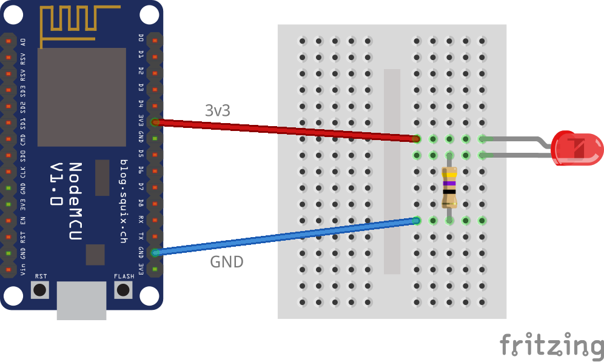

PyLadies Brno
MicroPython a malé počítače
Využíváme speciální vybavení, které je potřeba nejdřív sehnat. Máš-li možnost se dostat na sraz, nebo aspoň kontaktovat organizátory, doporučujeme shánět spíš tímto způsobem. Případně jde případný hardware objednat přes Internet, typicky z čínských e-shopů.

Dnes budeme programovat malý počítač – konkrétně tak malý počítač, že se ho pohodlně schováš v ruce. Konkrétně budeme používat desku zvanou NodeMCU, která by měla ležet před tebou. Než ji vyndáš z obalu, měla by ses vybít: dotkni se něčeho kovového, co je spojeno se zemí, třeba radiátoru nebo kovové části scránky nějakého spotřebiče, který je zapojený do zásuvky. Tím se zbavíš statické elektřiny, která by mohla malinký počítač poškodit. Pak přístroj vyndej z obalu. Snaž se ho držet za hrany a příliš se nedotýkat elektroniky a kovových částí.
Obal bude nejspíš roztržený, protože organizátoři do počítače před začátkem kurzu nainstalovali MicroPython.
Teď, když malý počítač držíš v ruce, si pojďme projít jeho základní součásti.

Nejdůležitější část našeho počítače je oplechovaná krabička s logem "Wi-Fi" a "FCC": mikroprocesor ESP8266. To je „mozek” celého zařízení, který – když je správně naprogramován – umí provádět Pythoní příkazy a programy. Procesor sedí na malé destičce, na které je ještě anténa, kterou přístroj může komunikovat s okolím.
Tahle malá destička se dá použít i samostatně; všechno ostatní, co kolem ní zabírá tolik místa, nám jen ulehčí hraní a umožní s malým počítačem jednoduše komunikovat a krmit ho elektřinou.
Komunikace a „krmení” se děje přes μUSB konektor, do kterého zapojíš kabel do svého velkého počítače. Když je modul naprogramovaný, stačí ho místo do počítače zapojit do nabíječky či externího zdroje (powerbanky), a bude fungovat samostatně.
Kolem USB konektoru jsou dvě tlačítka:
RST, kterým se
počítač restartuje
(jako kdybys ho odpojila a zase zapojila, což se
hodí když něco uděláš špatně a počítač „zamrzne”),
a FLASH, o kterém
si povíme později.
Po stranách modulu jsou dvě řady „nožiček”, na které se dá napojit celá řada nejrůznějších hraček.
Instalace
Bohužel se dnes neobejdeme bez instalace. Musíš naučit svůj velký počítač, aby si povídal s tím malým.
Propoj oba počítače přes USB kabel, jako kdybys připojovala třeba mobil.
Je potřeba použít kvalitní datový kabel. Nekvalitní kabely (např. spousta kabelů k nabíječkám) jsou často nepoužitelné.
Dál postupuj podle operačního systému na svém velkém počítači. Kdyby něco nefungovalo, poraď se s koučem. Původní (anglický) návod k této části je na stránkách MicroPythonu.
Linux
picocom (např.
sudo dnf install picocom,
sudo apt-get install picocom).
Potom spusť:
$ sudo picocom -b 115200 /dev/ttyUSB0a stiskni Enter. Měly by se objevit tři zobáčky,
>>>.
dmesg | tail, který vypíše něco jako:
$ dmesg|tail
[703169.886296] ch341 1-1.1:1.0: device disconnected
[703176.972781] usb 1-1.1: new full-speed USB device number 45 using ehci-pci
[703177.059448] usb 1-1.1: New USB device found, idVendor=1a86, idProduct=7523
[703177.059454] usb 1-1.1: New USB device strings: Mfr=0, Product=2, SerialNumber=0
[703177.059457] usb 1-1.1: Product: USB2.0-Serial
[703177.060474] ch341 1-1.1:1.0: ch341-uart converter detected
[703177.062781] usb 1-1.1: ch341-uart converter now attached to ttyUSB0
V předchozím příkazu pak zaměň ttyUSB za to,
co ti tento příkaz ukázal.
picocom používat
sudo, přidej se do skupiny
dialout nebo uucp, podle
svého systḿu. Kouč ti kdyžtak poradí.
Windows
putty.exe), a spusť ho.
V konfiguračním okýnku zaškrtni
Connection Type: Serial,
do Serial line: zadej svůj COM port,
a nastav Speed: 115200.
Klikni Open. Mělo by se otevřít
okýnko podobné konzoli, kde se, když stiskneš
Enter, objeví tři zobáčky:
>>>.
Mac
$ screen /dev/tty.usbmodem* 115200a stiskni Enter. Měly by se objevit tři zobáčky,
>>>.
MicroPython – taky Python
Tak jako máš na velkém počítači nainstalovaný operační systém, na malém počítači je takzvaný firmware, program, který ovládá všechny ty drátky, čipy a světýlka co v počítači jsou. My používáme firmware zvaný MicroPython, který navíc rozumí jazyku Python a umí provádět pythoní příkazy. Zkus si to! Tři zobáčky, které vyskočily v minulém kroku, přišly z malého počítače, který teď netrpělivě čeká na příkaz.
>>> 1+1
2
>>> print('Hello World')
Hello World
Téměř vše, co používáš v Pythonu na velkém počítači, umí MicroPython taky: čísla, řetězce, seznamy, třídy, výjimky, moduly, a tak dál. Některé detaily jsou trochu osekané, aby se všechno vešlo do extrémně malého prostoru. Zkus si, jak se liší efekt následujících příkazů od Pythonu na velkém počítači:
>>> print >>> help(print) >>> import math >>> math.pi
Najdůležitější věc, která je osekaná, je standardní
knihovna – většina modulů, které na velkém
počítači můžeš naimportovat, v MicroPythonu chybí.
U modulů jako turtle je to pochopitelné;
ale v rámci šetření místem chybí i moduly jako
random.
Většinou to příliš nevadí – malé počítače se používají
na jiné věci než ty velké – ale je potřeba si na to
dát pozor.
Vstup
MicroPython na našem malém počítači obsahuje některé
moduly, které jinde nenajdeme. Ten hlavní se jmenuje
machine, a dává nám přístup k základním
funkcím zařízení. Zkus si:
from machine import Pin pin = Pin(0, Pin.IN) print(pin.value())
Zmáčkni a drž tlačítko FLASH vedle USB
konektoru. Jak se změní pin.value()?
Jak tomuhle kódu rozumět?
Třída Pin ti umožňuje ovládat jednotlivé
„nožičky”, kterými malý počítač: komunikuje s vnějším
světem: buď na nich nastavovat napětí, nebo zkoumat
jestli na nich nějaké napětí je.
Pin(0, Pin.IN) vytvoří objekt třídy Pin,
který bude načítat data z „nožičky” číslo 0.
(IN znamená načítání – informace jdou
do procesoru).
Funkce pin.value() změří napětí na dané
„nožičce”, a vrátí buď 1 nebo 0 podle toho,
jestli nějaké naměřila.
No a „nožička” číslo 0 je připojená k tlačítku
RESET.
Informace o tom, která nožička je kam připojená,
máš na taháku – můžeš si zkontrolovat,
že Pin(0) u sebe má poznámku FLASH.
Obvod
Teď na chvíli necháme programování a postavíme si elektrický obvod. Vezmi si červenou svítivou diodu (LED, „světýlko”), rezistor, nepájivé pole („hloupou destičku”), a propojovací drátky. Zkusíme světýlko rozsvítit.
LED rozsvítíš tak, že ji připojíš ke zdroji napětí, například k tužkové baterce. Ale má to dva háčky:
Zaprvé musíš diodu zapojit správným směrem: plus na plus (+1.5 voltů), mínus na mínus (0 voltů. „zem”). Opačně dioda svítit nebude. Dobrá zpráva je, že když diodu otočíš špatně, nic se jí nestane.
Základní vlastnost diody je ta, že pustí elektrický proud jen jedním směrem. Svítící dioda – angl. Light Emitting Diode, LED – ještě k tomu navíc svítí.
Druhý problém je, že většina zdrojů napětí je na LED příliš silná. typická LED potřebuje zhruba 1.8 V. Tužková baterka dává 1.5V, což je málo – dioda bude svítit slabě. Náš počítač ale poskytne 3.3 voltů, což je moc: dioda by chvilku svítila příliš, a po chvíli by se nenávratně zničila. Proto před diodu zapojíme rezistor – součástku, která napětí pro diodu sníží.
Rezistor, který dostaneš, je správný pro použitou LED a zdroj. Kdybys někdy chtěla použít jiné součástky, najdi si na internetu jak vypočítat správnou hodnotu rezistoru podle Ohmova zákona – nebo si nech poradit od nějakého fanouška elektrotechniky.
A jak to všechno spojit dohromady? K tomu použijeme „hloupou destičku”: nepájivé pole (angl. breadboard). Je v ní spousta dírek, do kterých se dají strkat dráty. V rámci každé poloviny destičky je každá řada dírek – tedy každá pětice – spojená dohromady. Když zapojíš drátky do stejné řady, spojíš je tím.
Zapojuj postupně:
- Odpoj USB kabel – nikdy bys neměla zapojovat součástky, které jsou pod proudem.
-
Najdi, kde má dioda katodu (
-): je to ta kratší nožička. Červené pouzdro diody je u katody trochu seříznuté, a vevnitř má katoda větší plíšek.
Té druhé nožičce se říká anoda (+). - Zastrč do nepájivého pole obě nožičky diody tak, aby nebyly ve stejném řádku. Pamatuj si, která je která.
- Ke katodě (tedy do řádku nepájivého pole, kde máš katodu) zastrč jednu nožičku rezistoru. Druhou dej do nepoužitého řádku. (U rezistoru je jedno, kterým směrem ho zapojíš.)
-
Anodu diody spoj drátkem s nožičkou počítače
označenou
3V3(to znamená 3,3 volty). -
Volnou nožičku rezistoru spoj s nožičkou
počítače označenou
G(neboGND: Ground, země). - Zkontroluj si, že obvod vypadá jako na obrázku:

Potom zapoj USB kabel. Dioda by se měla rozsvítit.
Výstup
Když světýlko svítí, určitě s ním půjde i blikat.
Přepoj drát k anodě z 3V3 na
D1.
Máš-li zapojeno, znovu se připoj k MicroPythonu a zadej následující kód:
from machine import Pin pin = Pin(5, Pin.OUT) pin.value(1)
Když objekt Pin vytvoříš s Pin.OUT,
MicroPython na něm bude nastavovat napětí –
buď 3,3V (value(1)) nebo 0 voltů
(zem, value(0)).
Když je LED zapojená mezi 3,3V (+) a zemí (-), svítí.
Číslování nožiček je bohužel dvojí – nožička
označená jako D1 má v procesoru přiřazené
číslo 5. Třída Pin v MicroPythonu
používá číslování procesoru.
Naštěstí máš tahák, kde snadno dohledáš že
D1 a Pin(5) jsou dvě jména
stejné nožičky.
Zvládneš napsat program, který zařídí, aby dioda
svítila když je zmáčknuté tlačítko FLASH,
jinak ne?
Nápověda: Můžeš pořád dokola zjišťovat stav tlačítka a nastavovat podle něj stav LED.
Řešení
from machine import Pin
pin_diody = Pin(5, Pin.OUT)
pin_tlacitka = Pin(0, Pin.IN)
while True:
pin_diody.value(1 - pin_tlacitka.value())
Triky MicroPythoní konzole
Jak začneš psát trochu složitější programy, mohlo by se stát, že tě konzole MicroPythonu začne trovhu štvát. Špatně se v ní opravují chyby a automatické odsazování funguje jen většinou.
Doporučuju si větší kousky kódu – a určitě takové, ve kterých je nějaký cyklus, podmínka či funkce – psát vedle do editoru, a pro provedení je vždycky zkopírovat a vložit do konzole.
Máš-li v kódu odsazení, zmáčkni před vložením Ctrl+E, a po něm Ctrl+D. Tím vypneš automatické odsazování, které při vkládání jenom vadí.
Možná sis toho už všimla u minulé nekonečné smyčky, ale Ctrl+C, funguje jako v Pythonu na velkých počítačích.
A dobrá zpráva pro Windowsářky: když zmáčkneš v PuTTY prostřední tlačítko myši, vloží se obsah schránky. Nemusíš tedy, jako v příkazové řádce Windows, vkládat přes menu.
Příliš rychle blikat
Když světýlko svítí, určitě s ním půjde i blikat.